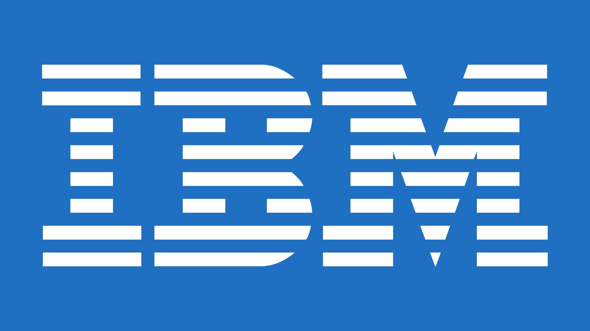

Learn SAP the way consultants actually use it — not just the way exams test it.
Businesses everywhere are cleaning up their processes and moving core operations onto SAP. SV Curiotech trains students, graduates and working professionals in Coimbatore to step into that world, with live S/4HANA practice, real business scenarios, and placement support that doesn't stop the day you get your certificate.
- Live SAP S/4HANA server access
- One-to-one mentorship, not batch-only lectures
- Resume, LinkedIn & interview preparation
- Weekday, weekend & online batches
What you're signing up for
Picking the right SAP institute is the real first decision in your SAP career.
We built our training around one idea: theory tells you what SAP does, but only practice teaches you how to actually use it inside a business. Here's what that looks like day to day.
Industry-mapped curriculum
Our SAP S/4HANA courses are built around what companies are actually hiring for right now, not a fixed syllabus that hasn't changed in years.
Trainers who've done the job
You learn from people who've configured these systems for real organisations, not just people who've read the manual.
Live server, live business cases
Every module is practised on a live SAP server, working through configuration exercises and end-to-end business simulations.
A real project on your resume
You leave with a complete project you can talk through in an interview, not just a list of topics you sat through.
Mentorship, not just a timetable
One-to-one sessions for doubts, resume reviews, and LinkedIn positioning — alongside technical and HR interview preparation.
Support that continues after class
Placement assistance runs until you're placed — not until the last day of the syllabus.
Nine SAP modules, taught the way businesses actually run them.
Whether your background is finance, supply chain, HR or engineering, there's an SAP module built for how you think. Here's what each course covers.
SAP FICO
Everything you need to master Financial Accounting and Controlling, taught through real posting and reporting scenarios rather than isolated topics.
- General Ledger Accounting
- Accounts Payable & Receivable
- Asset Accounting
- Cost Centre Accounting
- Internal Orders
- Financial Reporting
You don't learn SAP from a textbook. You learn it by doing the work.
Knowledge only sticks when you've applied it. That's why every SAP course at SV Curiotech is built around business scenarios designed specifically for that module, so what you configure in class looks exactly like what you'll be asked to do on the job.
- Configuration of enterprise structure, from the ground up
- Configuration of master data used across real processes
- End-to-end business process scenarios, not isolated exercises
- Guided configuration practice with correction and feedback
- Live business cases pulled from real industry situations
- Business documentation, the way consultants actually write it
- Mini projects through the course to build confidence early
- A capstone project you present at the end of training
Getting certified is step one. Getting hired is the actual goal.
As your training draws to a close, we shift focus to getting you in front of the right employers — with resume building, LinkedIn optimisation, mock interviews, HR interview preparation, aptitude practice, career counselling, job referrals and interview scheduling. Support continues until you're placed in a corporate role, not just until the course ends.
Industries hiring SV Curiotech graduates
SAP doesn't require a technical degree — it requires the right training.
Our courses start from the basics and build up, so you can join with little or no prior SAP exposure. Here's who typically joins us:
From choosing a module to walking into your first SAP role.
Choose your module
We help you pick FICO, MM, SD, ABAP or another module based on your background and career goals.
Train hands-on
Work through live SAP servers, configuration exercises and business process simulations.
Build your project
Complete a capstone project you can walk an interviewer through, step by step.
Get placement-ready
Resume, LinkedIn, mock interviews and referrals — until you're placed.
SAP runs quietly behind almost every large business you interact with.
Manufacturing, automotive, healthcare, banking, logistics, retail, pharmaceuticals and telecom companies around the world run their core operations on SAP. That breadth is exactly why skilled SAP consultants stay in steady demand — and why it remains one of the better-paying entry points into enterprise IT and business consulting today.
We're not measuring success by attendance. We're measuring it by placement.
Our trainers stay with you for one-to-one mentorship and personal support through the entire journey — from your first configuration exercise to the day you receive an offer letter in the SAP field you chose.
A general sense of where SAP roles land, by experience.
Junior SAP support and end-user roles, the typical starting point after certification.
Consultants with hands-on implementation or support-project exposure.
Functional and technical experts leading modules on large implementations.
Actual compensation varies by module, city, employer and your prior experience — treat this as a general shape, not a guarantee, and use it as a starting point for your own research.
Straight answers to what people usually ask before enrolling.
Do you offer placement assistance?
Yes. Every student gets comprehensive placement support — resume development, LinkedIn optimisation, interview preparation, career advice and job referrals — that continues until you're placed.
Are the SAP courses suitable for freshers?
Yes. Our courses are designed for both freshers and career changers, starting from the fundamentals before moving into advanced configuration.
Do you offer practical SAP training?
Yes. Training is hands-on throughout, with live SAP server access and real project work rather than slide-only theory.
Which SAP course is the best for me?
It depends on your academic background and interests — commerce and finance backgrounds often suit SAP FICO, while technical graduates often lean toward SAP ABAP. Our counsellors can help you decide during your free demo.
Do you offer online training?
Yes. Our online, instructor-led SAP training is priced affordably and holds to the same standard as our classroom sessions.
A few notes from students who trained with us.
I came in with a commerce degree and zero SAP background. The FICO training didn't rush — every concept was tied to a real business case before we moved on, so it actually stayed with me.
What stood out was the mentorship. My trainer reviewed my resume line by line and sat through two mock interviews with me before I felt ready to apply anywhere.
Switching from a manufacturing job to SAP PP felt risky, but the live server practice made the transition make sense. I could see exactly how what I already knew mapped onto the system.
The SD module finally made the order-to-cash cycle click for me. We worked through billing and pricing on the live server until it stopped feeling abstract.
The live SAP server made a huge difference. Instead of memorizing concepts, we actually configured the system ourselves. That practical experience helped me clear interviews confidently.
The trainers explained every process with real business examples. I joined without SAP knowledge, but after completing the course I could confidently work on procurement scenarios.
The placement support was excellent. They helped me improve my resume, LinkedIn profile, and interview skills. The mock interviews boosted my confidence before attending company interviews.
Weekend classes were flexible enough for my work schedule. The one-to-one mentoring sessions cleared every doubt, and I successfully transitioned into an SAP consulting role.
Our Students Work In Top Companies
SV Curiotech students have gone on to build successful SAP careers with leading IT, consulting and multinational companies.
TCS
SAP Consulting
Infosys
SAP Projects
Wipro
SAP ERP
Accenture
Digital SAP
IBM
SAP CloudCapgemini
SAP ServicesDeloitte
SAP ConsultingHCLTech
SAP SupportRequest for Course Information
SAP is a promising field — job security, strong salaries, and real career growth. Let's get you there.
With the right training and guidance, anyone can build the skills to become an SAP consultant, business analyst, or functional expert. Talk to us today about the module that fits you best.